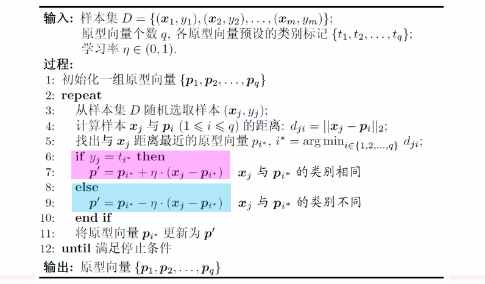
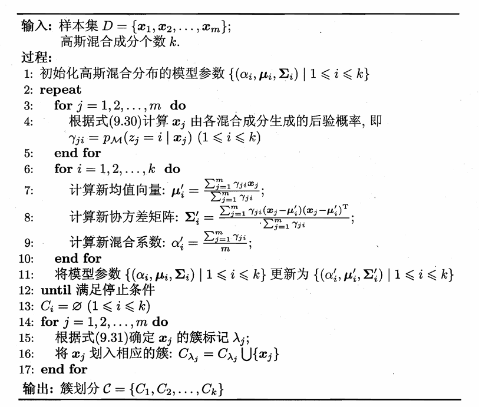

Chapter9 聚类
Failure
聚类好出大题。 有序属性和无序属性都能判断距离（判断题） 比较喜欢考高斯混合聚类，涉及EM；还可以基于高斯混合聚类换一个分布，比如迪利克雷分布、泊松分布，来推导聚类形式。 密度聚类和层次聚类了解一下就行。 连续换成离散来考？ 外部指标和内部指标的那些系数也会考，比如聚类大题的第一小题
什么是聚类？
将数据样本划分为若干个（通常）不相交的簇（cluster）。
性能度量
聚类的性能度量，又称为有效性指标（validity index）。
- 外部指标：将聚类结果与某个参考模型进行比较，如Jaccard系数、FM指数、Rand指数等
- 内部指标：直接考察聚类结果，无参考模型，如DB指数、Dunn指数等
基本想法：簇内相似度高，簇间相似度低。
距离计算
闵可夫斯基距离（Minkowski Distance）：
$$\text{dist}{\text{mk}}(x_i,x_j)=(\sum\limits$$}^n|x_{iu}-x_{ju}|^p)^{\frac{1}{p}
- $p=1$：曼哈顿距离（Manhattan Distance）
- $p=2$：欧氏距离（Euclidean Distance）
VDM（Value Difference Metric）：
VDM针对的是无序属性，即无法比较大小的属性。
- $m_{u,a}$：属性$u$上取值为$a$的样本数
- $m_{u,a,i}$：在第$i$个样本簇属性$u$上取值为$a$的样本数
- $k$：样本簇数
属性$u$上两个离散值$a$和$b$之间的VDM距离为
$$\text{VDM}p(a,b)=\sum\limits|^p$$}^k|\frac{m_{u,a,i}}{m_{u,a}}-\frac{m_{u,b,i}}{m_{u,b}
将闵可夫斯基距离和VDM结合起来即可处理混合属性。假设有$n_c$个有序属性，$n-n_c$个无序属性，令有序属性排列在无序属性之前，则有MinkovDM距离为
$$\text{MinkovDM}p(x_i,x_j)=(\sum\limits}^{n_c}|x_{iu}-x_{ju}|^p+\sum\limits_{u=n_c+1}^n\text{VDMp(x$$},x_{ju}))^{\frac{1}{p}
Warning
VDM依赖于聚类结果已经存在？
常见聚类方法：
- 原型聚类 假设：聚类结构能通过一组原型（簇中心）刻画 过程：先对原型初始化，然后对原型进行迭代更新求解 代表：K均值聚类、学习向量量化、高斯混合聚类
- 密度聚类 假设：聚类结构能通过样本分布的紧密程度刻画 过程：从样本密度的角度来考察样本之间的可连接性，并基于可连接样本不断扩展聚类簇 代表：DBSCAN、OPTICS、 DENCLUE
- 层次聚类 假设：能够产生不同粒度的聚类结果 过程：在不同层次对数据集进行划分，从而形成树形的聚类结构 代表：AGNES、DIANA
K均值聚类
每个簇中心以该簇中所有样本点的均值表示。
- step1：随机选取$k$个样本点作为初始的簇中心
- step2：计算每个样本点与各簇中心的距离，并将样本点分配给距离最近的簇中心
- step3：更新每个簇的簇中心为该簇中所有样本点的均值
- step4：重复step2和step3，直到簇中心不再变化或达到最大迭代次数
Note
在每个簇中，如果不以均值作为簇中心，而是以到簇内其他点距离之和最小的点作为簇中心，则称为K-medoids聚类。
学习向量量化（LVQ）
LVQ也试图找到一组代表样本簇的原型向量，但LVQ是有监督的，假设数据样本带有类别标记。
- 样本集：$D={(x_1,y_1),(x_2,y_2),\dots,(x_m,y_m)}$
- 每个样本有$n$个属性和一个类别标记：$x_j=(x_{j1},x_{j2},\dots,x_{jn};y_j)$
- 目标：学得一组$n$维原型向量${p_1,p_2,\dots,p_q}$，每个原型向量代表一个聚类簇，簇标记为$t_i$
Note
$q$不一定等于可能的类别数。
- step1：随机选取$q$个样本初始化$q$个原型向量
- step2：随机选取一个有标记的训练样本，找到与其距离最近的原型向量
- step3：判断样本的类别标记与原型向量的簇标记是否相同
- step4：若相同，则将原型向量向样本方向移动；否则，将原型向量远离样本方向移动。即更新原型向量
- step5：重复step2到step4，直到满足停止条件

高斯混合聚类
Definition
对$n$维样本空间$X$中的随机变量$x$，若$x$服从高斯分布，则其概率密度函数为：
$$p(x)=\frac{1}{(2\pi)^{\frac{n}{2}}|\Sigma|^{\frac{1}{2}}}e^{-\frac{1}{2}(x-\mu)^T\Sigma^{-1}(x-\mu)}$$
其中，$\mu$为$n$维均值向量，$\Sigma$为$n\times n$的协方差矩阵。高斯分布由这两个参数确定，我们将概率密度函数记为$p(x|\mu,\Sigma)$。
模型假设-高斯混合分布：
$$p_M(x)=\sum\limits_{i=1}^k\alpha_i\cdot p(x|\mu_i,\Sigma_i)$$
该分布由$k$个高斯分布组成，混合系数满足$\sum\limits_{i=1}^k\alpha_i=1$。
对于训练集$D={x_1,x_2,\dots,x_m}$，如果我们想将其分成$k$类，那么我们可以想象样本是由$k$个高斯分布组成的高斯混合分布生成的：
- step1：根据混合系数选择一个高斯分布，混合系数就是选择该高斯分布的概率
- step2：根据选定的高斯分布生成样本
每个样本对应一个$z_j\in{1,2,\dots,k}$，表示该样本属于第几个高斯分布（自然而然达到了聚类的效果）。根据贝叶斯定理，$z_j$的后验分布：
$$p_M(z_j=i|x_j)=\frac{P(z_j=i)\cdot p_M(x_j|z_j=i)}{p_M(x_j)}$$
$$=\frac{\alpha_i\cdot p(x_j|\mu_i,\Sigma_i)}{\sum\limits_{l=1}^k\alpha_l\cdot p(x_j|\mu_l,\Sigma_l)}$$
上式简记为$\gamma_{ji}$，表示的是对于给定的样本$x_j$，其属于第$i$个高斯分布的概率有多大。
因此，对于每个样本$x_j$，都有一组属于各高斯分布的概率。我们想要达到这样的效果：分组后，每个样本都属于概率最大的那个高斯分布。
此时，我们的目标是：确定模型参数${(\alpha_i,\mu_i,\Sigma_i)|1\leqslant i\leqslant k}$，从而确定高斯混合分布，使得每个样本$x_j$对应的簇标记$\lambda_j$应满足：
$$\lambda_j=\argmax\limits_{i\in{1,2,\dots,k}}\gamma_{ji}$$
EM算法：
给定样本集$D$，可采用极大似然估计（最大化对数似然）。直观理解上就是：我们之前想象样本是由$p_M(x)$生成的，因此我希望这个模型尽可能贴合我的样本集，即样本集在该模型下出现的概率尽可能大：
$$LL(D)=\ln(\prod\limits_{j=1}^mp_M(x_j))$$
$$=\sum\limits_{j=1}^m\ln(\sum\limits_{l=1}^k\alpha_l\cdot p(x_j|\mu_l,\Sigma_l))$$
那么只有导数为0，对数似然才能最大化。过程不表，结果如下：
$$\mu_i=\frac{\sum\limits_{j=1}^m\gamma_{ji}x_j}{\sum\limits_{j=1}^m\gamma_{ji}}$$
$$\Sigma_i=\frac{\sum\limits_{j=1}^m\gamma_{ji}(x_j-\mu_i)(x_j-\mu_i)^T}{\sum\limits_{j=1}^m\gamma_{ji}}$$
$$\alpha_i=\frac{1}{m}\sum\limits_{j=1}^m\gamma_{ji}$$
Proof
$\mu_i$怎么得到：
首先，先考虑
$$p=\frac{1}{(2\pi)^{\frac{n}{2}}|\Sigma|^{\frac{1}{2}}}e^{-\frac{1}{2}(x-\mu)^T\Sigma^{-1}(x-\mu)}$$
对$\mu$求导。上式取对数：
$$\ln(p)=\ln(\frac{1}{(2\pi)^{\frac{n}{2}}|\Sigma|^{\frac{1}{2}}})-\frac{1}{2}(x-\mu)^T\Sigma^{-1}(x-\mu)$$
$$\frac{\partial \ln(p)}{\partial \mu}=\Sigma^{-1}(x-\mu)$$
$$\frac{\partial p}{\partial \mu}=\frac{\partial p}{\partial \ln(p)}\cdot\frac{\partial \ln(p)}{\partial \mu}=p\cdot\Sigma^{-1}(x-\mu)$$
接下来，对$LL(D)$求导：
$$\frac{\partial LL(D)}{\partial \mu_i}=\sum\limits_{j=1}^m\frac{1}{\sum\limits_{l=1}^k\alpha_l\cdot p(x_j|\mu_l,\Sigma_l)}\cdot\alpha_i\cdot\frac{\partial p(x_j|\mu_i,\Sigma_i)}{\partial \mu_i}$$
最后一项代入上面的结果：
$$\frac{\partial LL(D)}{\partial\mu_i}=\sum\limits_{j=1}^m\frac{1}{\sum\limits_{l=1}^k\alpha_l\cdot p(x_j|\mu_l,\Sigma_l)}\cdot\alpha_i\cdot p(x_j|\mu_i,\Sigma_i)\cdot\Sigma^{-1}(x_j-\mu_i)$$
代入$\gamma_{ji}$：
$$\frac{\partial LL(D)}{\partial\mu_i}=\sum\limits_{j=1}^m\gamma_{ji}\cdot\Sigma^{-1}(x_j-\mu_i)$$
令其为0，并且两边同乘$\Sigma$，得到：
$$\sum\limits_{j=1}^m\gamma_{ji}(x_j-\mu_i)=0$$
变换后得到结果：
$$\mu_i=\frac{\sum\limits_{j=1}^m\gamma_{ji}x_j}{\sum\limits_{j=1}^m\gamma_{ji}}$$
$\Sigma_i$怎么得到：
同理：
$$\frac{\partial \ln(p)}{\partial \Sigma}=\frac{1}{2}(\Sigma^{-1}(x-\mu)^T(x-\mu)\Sigma^{-1}-\Sigma^{-1})$$
$$\frac{\partial p}{\partial \Sigma}=p\cdot\frac{1}{2}(\Sigma^{-1}(x-\mu)^T(x-\mu)\Sigma^{-1}-\Sigma^{-1})$$
$$\frac{\partial LL(D)}{\partial\Sigma_i}=\sum\limits_{j=1}^m\gamma_{ji}\cdot\frac{1}{2}(\Sigma_i^{-1}(x_j-\mu_i)^T(x_j-\mu_i)\Sigma_i^{-1}-\Sigma_i^{-1})$$
令其为0，并且两边同时左右各乘$\Sigma_i$，得到：
$$\sum\limits_{j=1}^m\gamma_{ji}(x_j-\mu_i)(x_j-\mu_i)^T=\sum\limits_{j=1}^m\gamma_{ji}\Sigma_i$$
变换后得到结果：
$$\Sigma_i=\frac{\sum\limits_{j=1}^m\gamma_{ji}(x_j-\mu_i)(x_j-\mu_i)^T}{\sum\limits_{j=1}^m\gamma_{ji}}$$
$\alpha_i$怎么得到：
除了最大化$LL(D)$，还要满足约束条件$\sum\limits_{i=1}^k\alpha_i=1$。因此引入拉格朗日乘子$\lambda$，构造新的目标函数：
$$LL(D)+\lambda(\sum\limits_{i=1}^k\alpha_i-1)$$
上式对于$\lambda$偏导为0可以得到：
$$\sum\limits_{i=1}^k\alpha_i-1=0$$
上式对于$\alpha_i$偏导为0可以得到：
$$\sum\limits_{j=1}^m\frac{p(x_j|\mu_i,\Sigma_i)}{\sum\limits_{l=1}^k\alpha_l\cdot p(x_j|\mu_l,\Sigma_l)}+\lambda=0$$
$$\alpha_i=-\frac{1}{\lambda}\sum\limits_{j=1}^m\gamma_{ji}$$
两边对$i$求和：
$$1=\sum\limits_{i=1}^k\alpha_i=-\frac{1}{\lambda}\sum\limits_{i=1}^k\sum\limits_{j=1}^m\gamma_{ji}=-\frac{1}{\lambda}\sum\limits_{j=1}^m\sum\limits_{i=1}^k\gamma_{ji}=-\frac{m}{\lambda}$$
$$\lambda=-m$$
代入之前的式子，得到结果：
$$\alpha_i=\frac{1}{m}\sum\limits_{j=1}^m\gamma_{ji}$$
综上：EM算法包括：
- E步：计算每个样本$x_j$属于各高斯分布的概率$\gamma_{ji}$
- M步：根据$\gamma_{ji}$更新模型参数$(\alpha_i,\mu_i,\Sigma_i)$

Warning
密度聚类和层次聚类待补充。